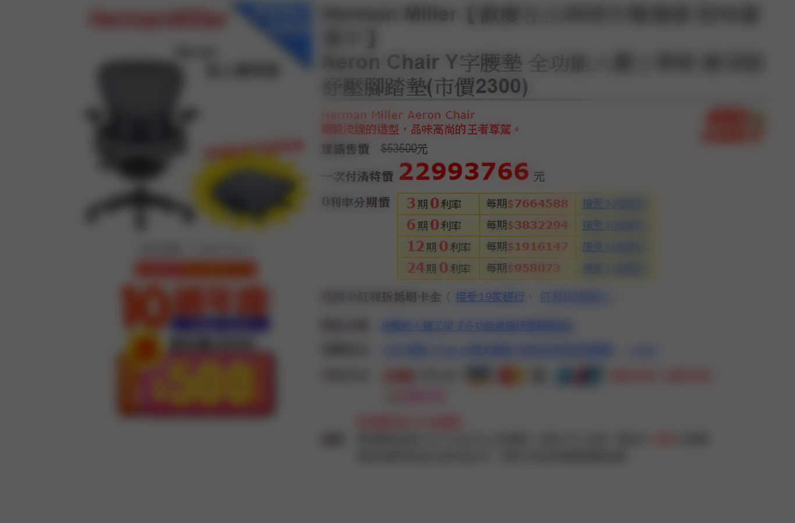

低成本，微應用。
技術絕非萬能，使用前請詳閱公開說明書。
避免受 cookies 等功能影響，以及使用新型的事件追蹤 API，
本功能使用通用版分析(analytics.js)，
若您的網站仍使用傳統版分析程式(ga.js)，建議升級。
此功能使用外部 Google Analytics 作為紀錄存取處，若系統網路所在環境無法連線上網，或是無法正常使用外網連線資源，此功能將無法使用。
本功能主要使用 Java Script 技術，需仰賴使用者的瀏覽器才能正常運作，若使用者有開啟額外的瀏覽器設定，或安裝額外的套件，紀錄仍有被竄改或停用的機會。
Google Analytics 有IP 匿名處理機制，無法直接看到每個瀏覽者的 IP。請額外透過前端或後端語法偵測使用者 IP，再一起送到 GA 內。
ps.若使用共享網路環境，多個使用者將記錄為同一個 IP。
Google Analytics 標準版的資料流不是無限的，只要每個月 1000 超過萬次點擊 / 或單日超過 20 萬個使用者 / 或每個工作階段超過 500 次點擊，超過的就不會再紀錄，可能造成紀錄或報表統計結果不正確。(相關說明)，若有更大量的數據需求，請洽Google Analytics Premium
Google 分析標準版的官方資料號稱只能調閱至少近 25 個月的資料，經過實測，至少 10 年前的資料都還調得到。數據保存期限依 Google Analytics 規定，不另行通知。(相關說明)，若有更大量的數據需求，請洽Google Analytics Premium
使用前請詳閱 Google Analytics 的安全性與隱私權、合理使用範圍等相關政策規定，避免紀錄消費者的個人重要資訊，或進行超出合理使用範圍的操作，如有問題概不負責。